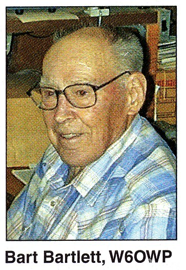

Forrest A. “Bart” Bartlett, W6OWP — Silent Key

Forrest “Bart” Bartlett, W6OWP, of Paradise, California, died July 3. He was 92. For more than a half-century, W6OWP was the home of the ARRL code practice and West Coast Qualifying Run transmissions, provided for those unable to reliably copy W1AW. Licensed in the 1930s, Bartlett contributed several articles to QST between 1941 and 1995, including two on electronic keyer design in 1948 and 1951. Bartlett also was a ham radio radioteletype (RTTY) pioneer. His friend Marvin Collins, W6OQI, says he and Bartlett may have enjoyed the longest-running RTTY schedule in the history of Amateur Radio.
“Bart and I kept a weekly RTTY sked for over 50 years,” said Collins. “There is going to be a large void in my Tuesday evenings from now on.” Collins said their RTTY get togethers began in February of 1956 and lasted until April of 2006, when Bartlett’s health deteriorated. They continued to stay in contact via telephone, however.
In 2000, after Bartlett retired from providing regular on-the-air code practice transmissions and qualifying runs for 52 years for residents of the West Coast, the ARRL Board of Directors conferred the National Certificate of Merit on W6OWP. In its resolution, the Board said Bartlett “exemplifies the very best in Amateur Radio volunteerism.” In 2003 he was inducted into the CQ Amateur Radio Hall of Fame for his role in promoting Morse code proficiency.
Bartlett related a good deal of his RTTY background in an undated “letter of recollections” he wrote to George Hutchison, W7TTY. As Bartlett tells it, his familiarity with radiotelegraphy led to his employment at KNX Radio in Los Angeles, where he intercepted shortwave dispatches for the station’s news department. That letter is preserved here: W6OWP — A Letter of Recollections →
Turned down for World War II service in the US Navy, Bartlett went to work for Press Wireless, which, he points out, pioneered the HF development of frequency shift keying (FSK). By the end of the war, Bartlett said, FSK “had made radioteletype a practical reality in the military and commercial fields.” Following World War II, Bartlett worked at Press Wireless’s HF transmitter near San Francisco. In 1949, he was awarded a US patent for developing a radio multiplex system.
By the early 1950s, Bartlett was experimenting with RTTY on ham radio. In 1953, minutes after the FCC authorized radio amateurs to use FSK, Bartlett and Richie Hoeck, W6RZL, made what may have been the first FSK RTTY contact. Bartlett was active in the Northern California Amateur Radio Teletype Society (NCARTS) as well as in US Air Force MARS CW and RTTY nets in the 1950s and 1960s.
A member of ARRL and of the A-1 Operator Club, W6OWP was a superb CW operator, and Collins says Bartlett retained his ability to copy 50 WPM or better and was a mobile CW pioneer. He also belonged to the Quarter Century Wireless Association and the Old Old Timers Club.
“Bart was a long-time RTTY and CW operator who will be missed by all who knew and maintained schedules with him on HF RTTY and CW over many years,” his close friend Larry Laitinen, W7JYJ, said in a memorial posting on the Greenkeys RTTY reflector. “His life spanned a period of time covering tremendous changes in worldwide printing radiotelegraphy communications.”
Thanks to Marvin Collins W6OQI for information used in this article.
Copyright © 2011 George Hutchison W7TTY & Bill Bytheway K7TTY